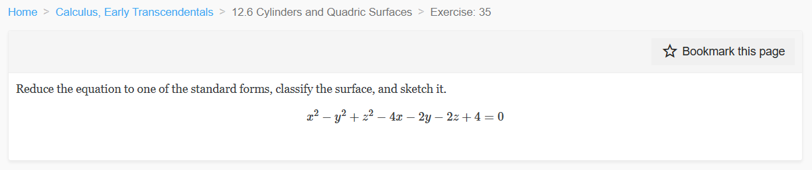
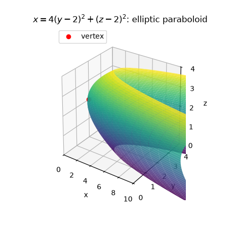
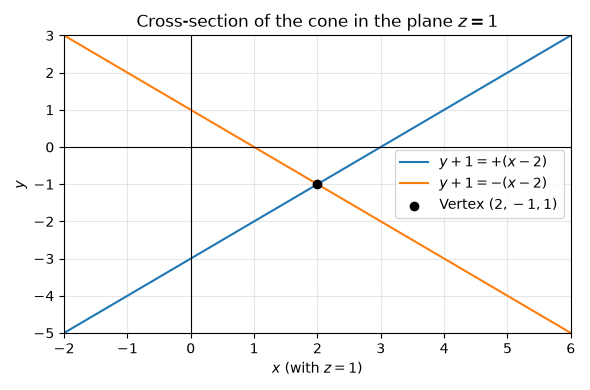
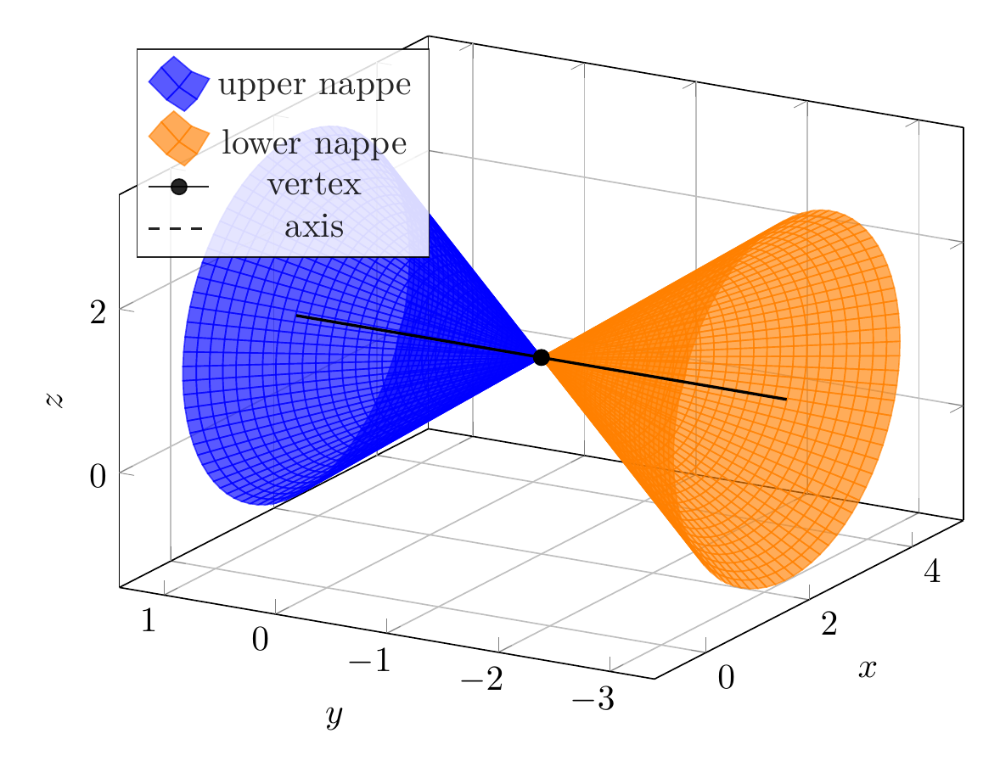
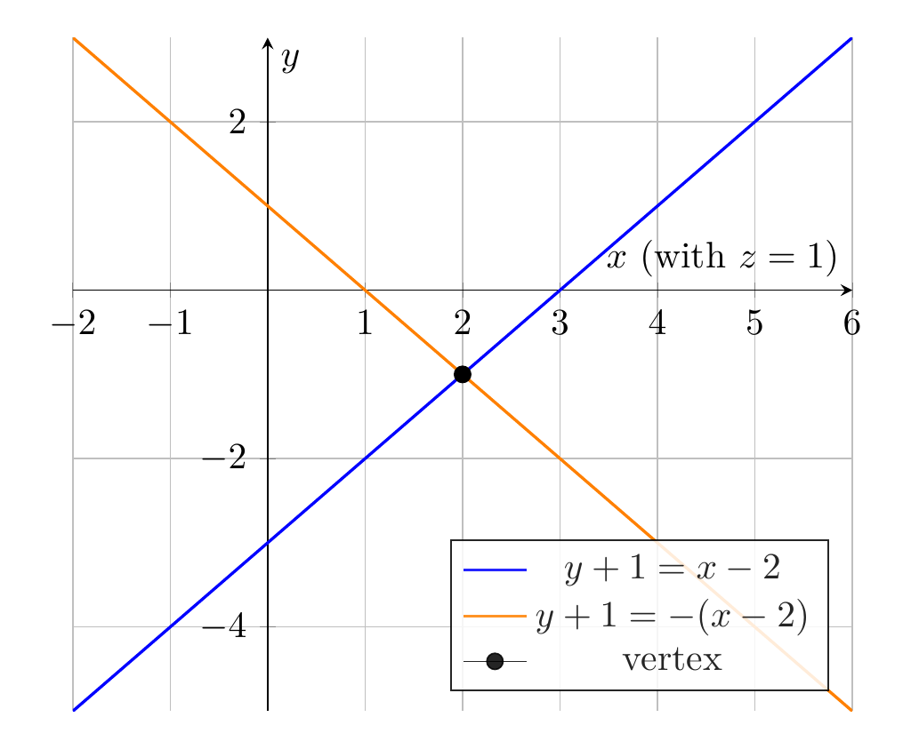

Path: mcma-Nex-N2-Pro/calculus-12.6.35/chat_20260825_021737_210234_utc_0800
Problem
Please solve the math problem in the image.

End of problem
Answer
Complete the squares in $x$, $y$, and $z$:
\[
\begin{aligned}
x^2-y^2+z^2-4x-2y-2z+4
&=(x^2-4x+4)-(y^2+2y+1)+(z^2-2z+1)\\
&=(x-2)^2-(y+1)^2+(z-1)^2.
\end{aligned}
\]
So the given equation becomes
\[
(x-2)^2-(y+1)^2+(z-1)^2=0,
\]
or equivalently,
\[
\boxed{(x-2)^2+(z-1)^2=(y+1)^2.}
\]
This is the standard form of a **double circular cone** with vertex
\[
\boxed{(2,-1,1)}
\]
and axis the line
\[
\boxed{x=2,\quad z=1.}
\]
The cone opens in the positive and negative $y$-directions. In the cross-section $z=1$, the trace is
\[
(x-2)^2=(y+1)^2,
\]
so
\[
y+1=\pm(x-2),
\]
which are two intersecting lines through the vertex.
\[
\boxed{\text{The surface is a double circular cone.}}
\]
---


\documentclass[border=10pt]{standalone}
\usepackage{pgfplots}
\pgfplotsset{compat=1.18}
\begin{document}
\begin{tikzpicture}
\begin{axis}[
width=10cm,
height=8cm,
view={-60}{25},
xlabel={$x$}, ylabel={$y$}, zlabel={$z$},
domain=0:2.2,
y domain=0:360,
samples=28,
samples y=80,
grid=major,
xmin=-1, xmax=5,
ymin=-3.4, ymax=1.4,
zmin=-1.4, zmax=3.4,
legend style={at={(0.02,0.98)}, anchor=north west, fill=white, opacity=0.85}
]
\addplot3[surf, shader=flat, blue, opacity=0.65]
({2+x*cos(y)}, {-1+x}, {1+x*sin(y)});
\addlegendentry{upper nappe}
\addplot3[surf, shader=flat, orange, opacity=0.65]
({2+x*cos(y)}, {-1-x}, {1+x*sin(y)});
\addlegendentry{lower nappe}
\addplot3[black, mark=*, mark size=2.2pt] coordinates {(2,-1,1)};
\addlegendentry{vertex}
\addplot3[black, dashed, thick, domain=-2.2:2.2, samples=2]
({2}, {-1+x}, {1});
\addlegendentry{axis}
\end{axis}
\end{tikzpicture}
\end{document}

\documentclass[border=10pt]{standalone}
\usepackage{pgfplots}
\pgfplotsset{compat=1.18}
\begin{document}
\begin{tikzpicture}
\begin{axis}[
width=9cm,
height=8cm,
axis lines=middle,
xlabel={$x$ (with $z=1$)},
ylabel={$y$},
grid=major,
xmin=-2, xmax=6,
ymin=-5, ymax=3,
legend pos=south east,
legend style={fill=white, opacity=0.85}
]
\addplot[blue, thick, domain=-2:6, samples=2] {x-3};
\addlegendentry{$y+1=x-2$}
\addplot[orange, thick, domain=-2:6, samples=2] {-x+1};
\addlegendentry{$y+1=-(x-2)$}
\addplot[black, mark=*, mark size=2.2pt] coordinates {(2,-1)};
\addlegendentry{vertex}
\end{axis}
\end{tikzpicture}
\end{document}

End of answer